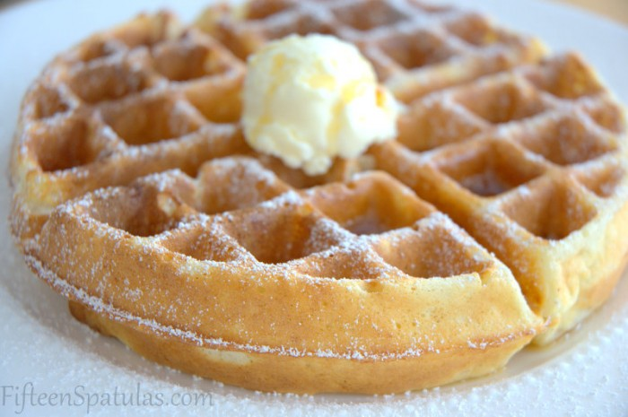

Doughnut Waffles Recipe

These super dense doughnut waffles were made by the Johnson family in the late 19th century to give them the energy for a hard day's work on the farm.
Ingredients
- 2 cups Flour
- 1/2 cup Sugar
- 2 teaspoons Baking Powder
- 6 tablespoons Butter
- 3/4 cup Milk
- 1/2 teaspoon Salt
- 1/2 teaspoon Nutmeg
- 1 teaspoon Vanilla
Steps
- Cream together sugar and Butter.
- Add 1 well beaten egg.
- Mix in flour, baking powder, salt, and nutmeg.
- Add milk while stirring until there are no lumps (3/4 cup is a rough estimate and you may need more).
- Add 2/3 cup of mix to waffle iron
- Enjoy!